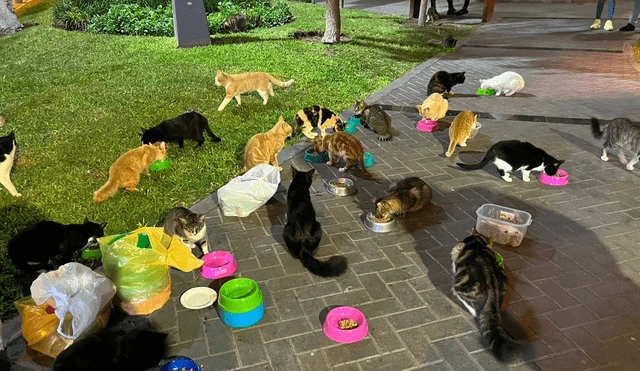
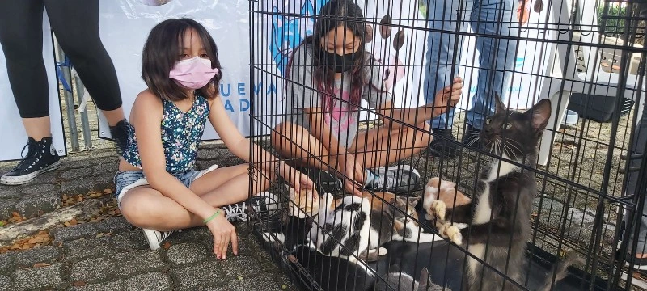
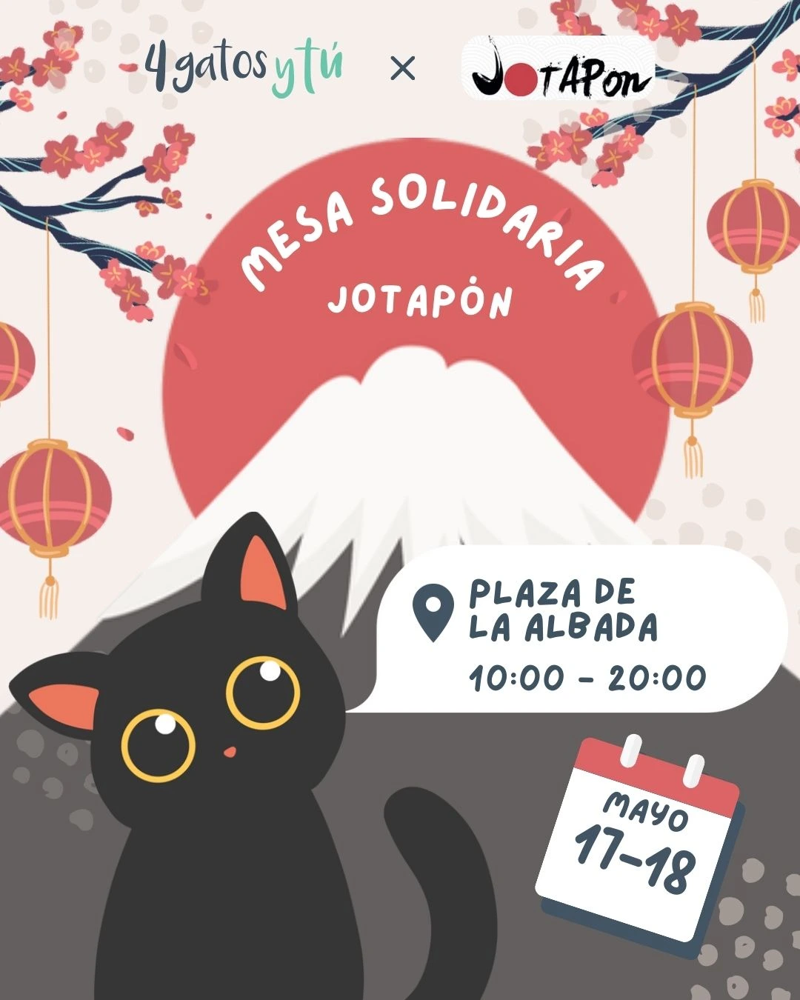
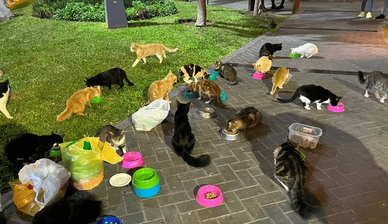
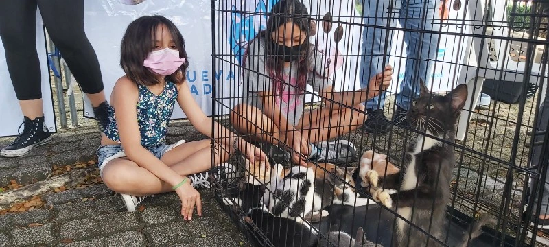
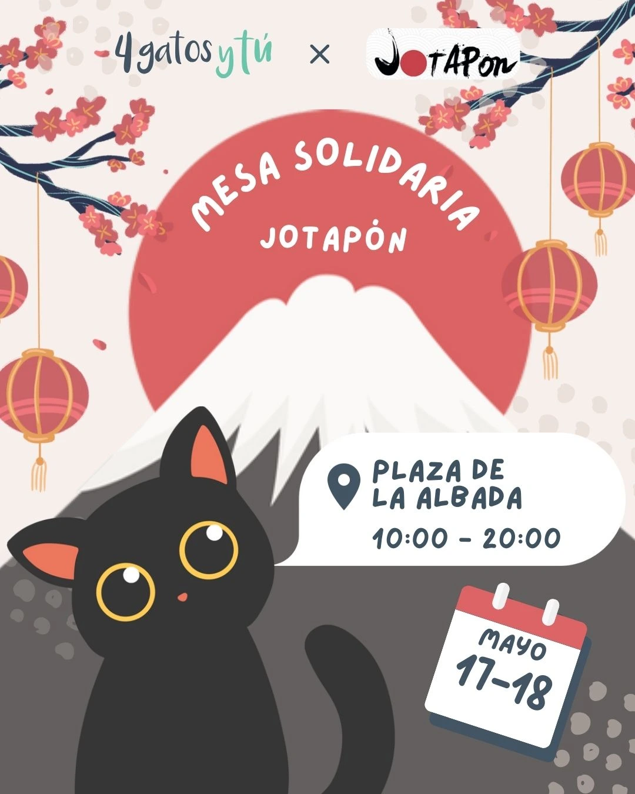

🎟️ Eventos solidarios
🧘♀️ Clase de Yoga Solidaria en el Museo Histórico
El viernes 19 de enero a las 19:30 se realizó una hermosa clase de yoga al aire libre en el jardín del Museo Histórico (Quintana y Newbery), a beneficio de Patitas Salvajes.
La actividad fue organizada por la Dirección de Cultura del Gobierno de Junín y dictada por la profe Belén Rodríguez. La entrada fue libre y gratuita, con una invitación especial: colaborar con alimento para felinos 💕
La jornada buscó no solo recaudar donaciones, sino también visibilizar la causa del abandono animal y promover el compromiso comunitario. Además, fue una oportunidad para que nuevos vecinos se acerquen al Museo y conozcan su rol cultural y social.
“Las puertas de los espacios culturales están abiertas para accionar por causas que nos comprometen a todos como comunidad.”
🌈 Feria Solidaria & Adopciones
Durante los fines de semana de octubre se realizaron ferias donde se ofrecieron productos artesanales, rifas y se compartieron historias de gatitos en adopción.
Gracias al acompañamiento de vecinas/os y comerciantes, se recaudaron fondos para castraciones, tratamientos veterinarios y kits de tránsito 💊
“Cada compra y cada abrazo compartido en estas ferias tiene el poder de cambiar vidas.”
📣 ¿Querés organizar un evento solidario?
Si tenés una idea (rifa, clase, torneo, feria, jornada cultural…), contanos. Desde Patitas Felices y Salvajes te acompañamos para que tu iniciativa sume a esta causa felina tan importante 🐾
🎨 Podés proponer talleres, sorteos, actividades artísticas o educativas.
📬 Escribinos a través del formulario o por nuestras redes.
✨ ¡Juntas y juntos podemos seguir rescatando, visibilizando y transformando historias!
📸 Galería de eventos pasados
 





📅 Próximos eventos
-
🐾 Jornada de adopciones – Parque Borchex
Domingo 30 de junio – 15:00 a 18:30 -
🎨 Taller solidario de acuarela para niños
Sábado 6 de julio – Espacio de Cultura y Arte Junín -
🎟️ Rifa “Invierno sin hambre”
Hasta el 20 de julio – Sorteo en Instagram -
🧘 Yoga solidario
Sábado 24/08 - Plaza Central -
🎟️ Rifa mensual
Sortea el 15/09 – Sorteo en Instagram -
📦 Jornada de donación
Sábado 30/09 - Veterinaria Pueblo Nuevo
💬 Lo que nos dejó cada encuentro
“Gracias a la feria pude adoptar a mi gata Frida. Las conocí ahí por primera vez.”
— Sofía R.“La clase de yoga fue hermosa, y saber que ayudamos a los michis la hizo aún más especial.”
— Paula C.“Participamos en familia y terminamos apadrinando a un michi. ¡Una experiencia llena de amor!”
— Diego y Mariela🤝 Aliados solidarios
Gracias a cada organización, comercio y profesional que colabora con nuestra causa 💕